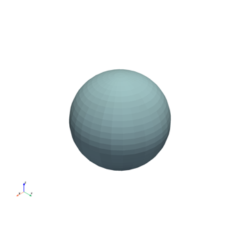
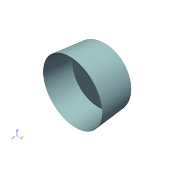
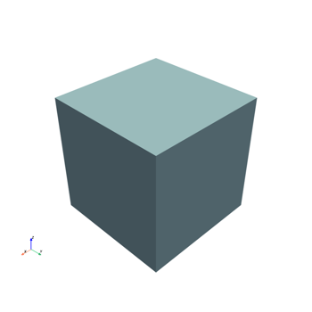
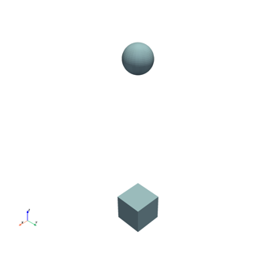

Basic usage examples#
These examples show how to use the general plotter included in the Visualization Interface Tool.


Use a PyVista Qt backend

Use a clipping plane


Use the plotter

Activate the picker
These examples show how to use the general plotter included in the Visualization Interface Tool.